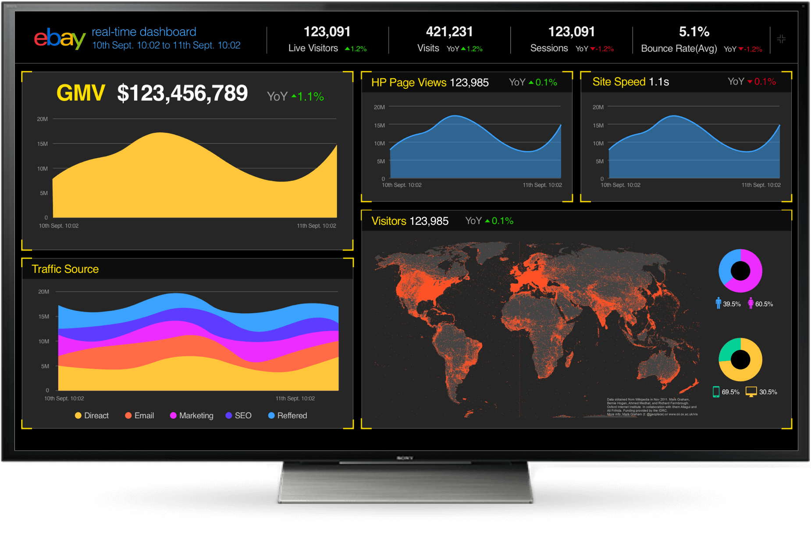
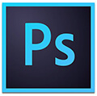

This is a realtime dashboard showing traffic data of eBay website in last 24 hours. It will be displayed on a TV screen everyday in eBay Headquarters in San Jose, everyone passing by can catch a glimpse.
Keywords
Concise
Litmit the number of charts and metrics, show only the most important data.
Focus
More important the data is, bigger size it's shown on the screen.
Delightful
Make it with vivid color, delight people who are looking at this dashboard.

Designed with Sketch and PS
For more data visualization work, please view my graduation presentation.